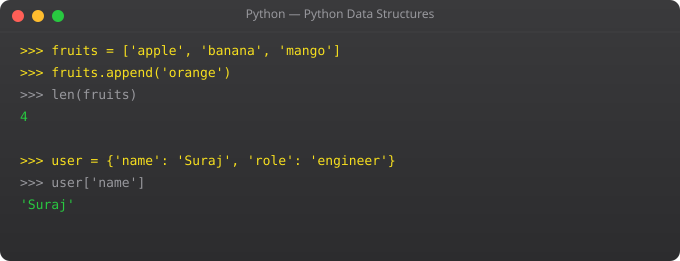

Real programs deal with repetition. Process 1000 records. Send emails to 500 users. Check 10000 stock prices. Writing the same code line by line for each item is not programming — it is madness. Loops solve this elegantly.
The for loop iterates over a sequence — a list, string, range, or any iterable:
fruits = ["apple", "mango", "banana", "orange"]
for fruit in fruits:
print(f"I like {fruit}")The variable fruit takes the value of each item in the list, one at a time, and runs the indented block for each.
for i in range(5): # 0, 1, 2, 3, 4
print(i)
for i in range(1, 6): # 1, 2, 3, 4, 5
print(i)
for i in range(0, 20, 5): # 0, 5, 10, 15
print(i)The while loop keeps running as long as a condition is True:
count = 1
while count <= 5:
print(f"Count: {count}")
count += 1
print("Loop finished")Be careful with while loops — if the condition never becomes False, the loop runs forever (infinite loop). Always make sure something inside the loop will eventually make the condition False.
for num in range(1, 100):
if num == 10:
print("Found 10, stopping!")
break
print(num)for i in range(1, 11):
if i % 2 == 0: # Skip even numbers
continue
print(i) # Only prints odd numbersfor i in range(1, 4):
for j in range(1, 4):
print(f"{i} x {j} = {i*j}")
print("---")cities = ["Mumbai", "Delhi", "Bangalore", "Rajkot"]
for index, city in enumerate(cities, start=1):
print(f"{index}. {city}")Python has a beautiful shorthand for creating lists from loops:
# Traditional way
squares = []
for n in range(1, 6):
squares.append(n ** 2)
# Pythonic way — one line
squares = [n ** 2 for n in range(1, 6)]
print(squares) # [1, 4, 9, 16, 25]
# With condition
even_squares = [n**2 for n in range(1, 11) if n % 2 == 0]
print(even_squares) # [4, 16, 36, 64, 100]List comprehensions are faster and more readable once you get comfortable with them. In Part 6, we cover data structures — lists, tuples, sets, and dictionaries — where loops become truly powerful.
Learning from common pitfalls saves hours of frustration. Here are the mistakes most beginners make in this area and how to avoid them.
The first mistake is trying to memorize syntax before understanding logic. Python syntax is simple — you could memorize it in a day. But if you do not understand why you are writing what you are writing, you will not be able to adapt when things change or when a problem looks slightly different. Always ask: what problem does this solve?
The second mistake is writing very long functions or very long scripts without breaking them into logical units. Real professional code is made of small, focused pieces that each do one thing well. The moment your code does two or three unrelated things in one block, it is time to split it up.
The third mistake is not reading error messages. Python's error messages are actually quite good. They tell you the file, the line number, the type of error, and often a description. Read the entire error before searching online. The answer is usually right there.
In real codebases, every concept from this tutorial series appears constantly. Backend web applications built with Flask or Django use functions, classes, data structures, and error handling throughout every route and service. Data pipelines use loops and comprehensions to process thousands of records efficiently. CLI tools use argument parsing, file handling, and process management. DevOps automation scripts combine shell integration with Python logic to orchestrate deployments, monitor systems, and handle alerts.
The concepts that feel abstract right now will click into place the moment you start building something real. That is why the best way to learn is to pick a small project that solves a problem you actually have — even something simple like a personal expense tracker or a file organizer — and build it using everything you have learned so far.
Before moving to the next part, write a small program that uses what you learned in this section. Do not copy from anywhere. Start with a blank file and build it from memory. The struggle is the learning. If you get stuck, read the code examples again — do not just copy them. Understand each line, then close the examples and write the program yourself. This is how programming actually sticks.
One of the most distinctive features of Python is the list comprehension — a concise, readable way to create a new list by applying an expression to each item in an existing iterable, with optional filtering:
# Traditional loop to create list of squares
squares = []
for n in range(1, 6):
squares.append(n ** 2)
# Result: [1, 4, 9, 16, 25]
# Same result with list comprehension
squares = [n ** 2 for n in range(1, 6)]
# With filtering — only even squares
even_squares = [n ** 2 for n in range(1, 11) if n % 2 == 0]
# Result: [4, 16, 36, 64, 100]
# Transforming strings
names = ["suraj", "priya", "rahul"]
capitalized = [name.title() for name in names]
# Result: ["Suraj", "Priya", "Rahul"]List comprehensions are a hallmark of idiomatic Python. They are typically faster than equivalent for loops and much more concise. Learn to read and write them — they appear throughout professional Python code.
When looping through a list and needing both the index and the value, avoid manually tracking a counter variable. Python's built-in enumerate() function provides both:
fruits = ["apple", "banana", "cherry"]
# Without enumerate — clunky
for i in range(len(fruits)):
print(f"{i}: {fruits[i]}")
# With enumerate — clean and Pythonic
for index, fruit in enumerate(fruits):
print(f"{index}: {fruit}")Write a program that generates the first 20 Fibonacci numbers using a while loop and stores them in a list. Then use a for loop with enumerate() to print each number with its position. Finally, use a list comprehension to create a new list containing only the even Fibonacci numbers from your list.